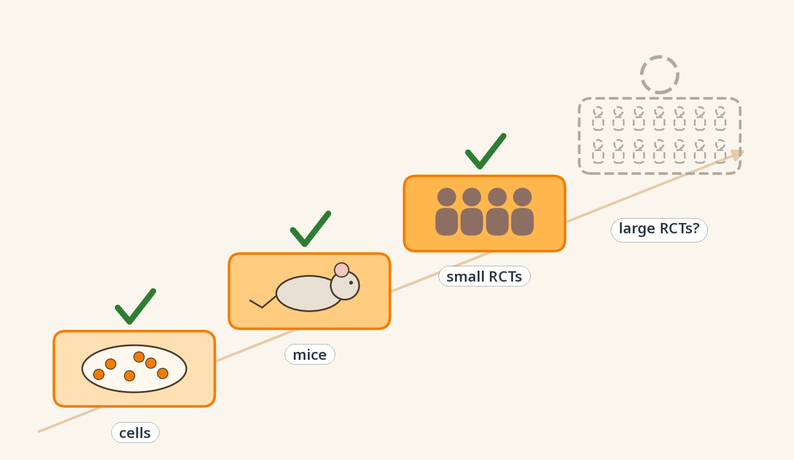

程序员长寿指南
命是可以科学地续的
11 章 · 双尺子证据分级 · 105 篇验证文献
熊博士 · DeepoMe 深度甲基 · 2026-10 · v2.0
👉 点击左右侧翻页｜滑动也可以｜顶部 A/文 切换语言｜参考文献在节末折叠条
Preface · Why this guide exists
This guide exists because of a gap.
Over the past few decades, sleep medicine, nutritional epidemiology and neuroscience have piled up evidence on how to live longer and better. It sits in PubMed, in paper titles, waiting to be translated. Meanwhile, most people's health knowledge comes from forwarded wellness posts and advice from relatives.
You don't have to wait for this research to trickle down. You can read it yourself. PubMed is public. Every section here comes with PMIDs: don't trust me, check.
I also don't want the walls between fields to keep standing. Sleep medicine, nutrition cohorts, cell biology and modern research on Chinese medicine should form one picture, not a handful of disciplines that ignore each other. This guide puts them on the same table and grades them with the same ruler.
Finally, everyday experience and traditional medicine shouldn't be ignored: some of it is real. Face and neck massage, Baduanjin (a traditional Chinese exercise), herbal soups: some already have partial evidence, some are being tested. We neither mythologize nor dismiss.
You can extend your runtime with science. Let's begin.
— Dr. Xiong
Maintainer: Dr. Xiong · updated as a series (see "About Dr. Xiong")
How to read this guide
The guide is made of standalone sections. Each covers one thing, takes a few minutes, and can be read in any order. Sections are grouped into chapters.
| Time you have | Start here |
|---|---|
| 2 minutes | "Series highlights" above: pick what you're most curious about |
| 5 minutes | The Ten Big Rocks: the ten things that matter most |
| A weekend | Pick your pain point: sleep, neck and back, eyes, anxiety, focus |
| The full picture | The Twelve Pillars: twelve hallmarks of aging, mapped to every section |
🔭 What makes this guide different
Most longevity books cover the same ground: exercise, sleep, diet, supplements. We cover those too (see The Ten Big Rocks), but four things are hard to find elsewhere:
- East and West at one table: traditional practices and molecular mechanisms graded with the same ruler. We turn tradition into testable scientific questions. Examples: ⭐ Yang Qi and Mitochondria (with a new menu and falsifiable predictions), ⭐ Face-and-Neck Lymphatic Massage.
- Fresh from the frontier: 2023–2026 findings from Nature, Cell, Nat Hum Behav and Cell Metab, translated into plain language.
- In programmer language: your circadian clock is NTP sync, sleep is garbage collection, chronic inflammation is a memory leak.
- Honest all the way down: two-ruler grading, a "why not higher" note in every section, an honest blank among the twelve pillars, a whole chapter called Don't Waste Your Money, and a conflict-of-interest statement.
Sections marked ⭐ are original to this guide.
How we grade evidence (v2: two rulers)
Every tip gets two labels: how strong the evidence is, and what you should do about it.
Ruler 1: Strength of evidence
| Grade | Meaning | Typical evidence |
|---|---|---|
| A | Strong human evidence | Randomized controlled trials (RCTs) or large cohorts/meta-analyses with hard outcomes like death or disease |
| B | Human evidence | Human studies, but with surrogate outcomes (blood sugar, melatonin rhythm, symptom scores) or only associations |
| C | Mechanism + early data | Mechanistic studies, animal experiments, small or single human studies |
| D | Tradition, untested | Traditional or popular belief without direct scientific evidence yet |
Ruler 2: What to do
| Label | Meaning |
|---|---|
| ✅ Do it | Enough evidence, low cost and low risk |
| 🧪 Worth a try | Limited evidence, but cheap and safe: try it and observe |
| 📖 Good to know | Knowledge only, or not something to do on your own |
| 💸 Save your money | A paid product whose evidence doesn't justify the price |
The grade applies to the advice itself, not to how hot the underlying science is.
A wrong grade is worse than none. If you spot an error in a grade or a citation, please open an Issue or PR.
Conflict of interest
This guide is maintained by Dr. Xiong, founder of DeepoMe, a company whose business includes DNA methylation testing and the DeepKang health platform. Sections directly related to that business (The Methylation Clock, Your Face Can Reveal Your Biological Age, and the "Toolbox" appendix) are flagged. They explain concepts only and recommend no testing product, including ours.
"Say exactly as much as the evidence supports" applies to us too.
Chapter 1 · Your Brain's Hidden Ops

Behind the scenes, your brain is doing three things you never noticed: draining waste, cutting its own DNA, and tuning your immune system. Most of the evidence here comes from Nature, Cell and similar journals, 2015–2026.
Face-and-Neck Lymphatic Massage (Brain Drain) ⭐
Evidence C (direct evidence in mice) ｜ 🧪 Worth a try ｜ Pain point: brain fog ｜ Pillar: H10 Altered intercellular communication (brain–lymph crosstalk)
In one line: Your brain's "wastewater" leaves through a route that runs under the skin of your face and neck. In 2025, a Nature study showed that gently pressing this route through the skin doubled cerebrospinal fluid outflow in mice.
Sound familiar? Four hours of debugging and your head feels like porridge. Coffee doesn't help.
How: once or twice a day, 1–2 minutes each time, always stroking downward, toward the neck: 1. From around the eyes and the sides of the nose, stroke gently down to the jawline. 2. Along the lower edge of the jaw, glide from the chin to just below the earlobe. 3. From below the ear, stroke down the side of the neck to just above the collarbone.
Use the pressure you'd use to apply face cream: just enough to move the skin. It shouldn't ache.
Why:
Think of it this way: the brain has no garbage truck. It dissolves metabolic waste into cerebrospinal fluid (CSF) and flushes it out through a network of pipes, like the drainage system of a server room.
That drainage system was mapped surprisingly late. Only in 2015 did scientists confirm that the membranes around the brain contain lymphatic vessels; until then, textbooks said the brain had none. In 2025, a Korean team published the full route in Nature: CSF leaves from the base of the skull, passes through lymphatic vessels around the eye sockets, in the nasal cavity and the palate, joins the superficial lymphatic vessels of the neck, and finally drains into the lymph nodes under the jaw. That neck segment sits just beneath the skin, wrapped in a layer of smooth muscle that can contract.
The key experiment: in old mice, this route works less well. When researchers used a force-controlled device to gently press the superficial neck lymphatics through the skin, CSF outflow doubled and the drainage deficit in old mice was corrected.
"Massage the face and neck to help the brain drain" now has direct animal evidence for the first time. The routine above follows that map.

▲ Right direction, light touch: CSF drains through superficial neck lymphatics to the lymph nodes under the jaw
🔬 Deeper: aging pipes and nitric oxide
Metabolic waste in the brain (including β-amyloid) enters the CSF through the glymphatic system, and is cleared fastest during sleep (Xie 2013). After leaving the skull through meningeal lymphatics, part of the CSF travels through extracranial lymphatics in the nasopharynx and palate into the superficial cervical lymphatics, then to the submandibular lymph nodes. Old mice have fewer lymphatic vessels in the nasal mucosa and palate, and less eNOS protein in their superficial cervical lymphatics, which impairs nitric oxide signaling. External mechanical stimulation increases outflow by **compressing** the superficial vessels, with little effect on their own spontaneous contractions (Jin 2025).How solid is the evidence? (C): - 2015: two landmark papers confirmed that meningeal lymphatic vessels exist and drain the brain (Louveau 2015; Aspelund 2015). - 2018: meningeal lymphatic function declines with age and is linked to Alzheimer's-related pathology (Da Mesquita 2018). - 2025: the route from CSF to the superficial neck lymphatics and the submandibular nodes was mapped; controlled mechanical stimulation through the skin doubled CSF outflow in mice (Jin 2025). - Why still C: the evidence comes from mice, using a force-controlled device, not human hands. Whether hand massage in humans does the same, or makes anyone think more clearly, has not been tested in people.
For programmers: do one round when you're stuck on a bug instead of scrolling your phone; do another before bed, when the brain's waste clearance peaks (see Sleep Debt Repayment Plan).
Limits: skip it if you have a lump in your neck, thyroid disease, or an acute infection with fever. Don't press on the pulsing carotid artery. Keep it gentle.
Author's note: This is the grade I hesitated over most. This 2025 Nature paper was a relief: the map exists, and pressing on it works in animals. But between "mouse + device" and "human + hand" there's still a human trial missing. When it arrives, this may become the first section in the guide to be upgraded from speculation.
📚 References (5, verified on PubMed)
1. Jin H, et al. Increased CSF drainage by non-invasive manipulation of cervical lymphatics. *Nature*. 2025;643(8072):755-767. (PMID: 40468071) 2. Louveau A, et al. Structural and functional features of central nervous system lymphatic vessels. *Nature*. 2015;523(7560):337-41. (PMID: 26030524) 3. Aspelund A, et al. A dural lymphatic vascular system that drains brain interstitial fluid and macromolecules. *J Exp Med*. 2015;212(7):991-9. (PMID: 26077718) 4. Da Mesquita S, et al. Functional aspects of meningeal lymphatics in ageing and Alzheimer's disease. *Nature*. 2018;560(7717):185-191. (PMID: 30046111) 5. Xie L, et al. Sleep drives metabolite clearance from the adult brain. *Science*. 2013;342(6156):373-7. (PMID: 24136970)Your Brain Cuts Its Own DNA to Learn ⭐
Evidence C (animal mechanism, top-journal evidence chain) ｜ 📖 Good to know ｜ Pain point: "my brain is fried" from learning a new framework ｜ Pillar: H1 Genomic instability
In one line: To write a new memory, neurons deliberately cut their own DNA, then repair it. The price of remembering is a controlled bit of "genome damage".
Sound familiar? Three days into a new framework, your brain feels like an overloaded server. You sleep on it, and the next morning it suddenly clicks.
Why:
Think of it as a hot patch in production. To ship a new config fast, the system takes a piece of code apart, edits it, and puts it back. Taking things apart is risky, so you need solid rollback and repair.
The brain really does this. Three top-journal papers form a chain: - Cut, to boot up fast: when a neuron fires, an enzyme called topoisomerase IIβ deliberately cuts the DNA near certain genes, so a set of "immediate early genes" can switch on quickly (Cell 2015). - After the cut, a dedicated repair crew: synaptic activity recruits a protein complex (NPAS4–NuA4) that couples neural activity to DNA repair (Nature 2023). - The break becomes part of the memory: hours after learning, a small cluster of neurons in the mouse hippocampus shows persistent DNA double-strand breaks, then activates a DNA-sensing inflammatory pathway (TLR9) to repair them. Switch that pathway off, and the mice remember worse. The very neurons that went through "break and repair" are the ones recruited into the memory circuit (Nature 2024).
The authors also warn: if repair goes wrong, this basic memory mechanism could become a gateway to genomic instability and cognitive decline.

▲ A memory is born: cut the DNA → repair → join the memory circuit
How: this section is about understanding your brain; there's nothing you need to "do". What you can take away: - While learning something new, protect your sleep (Sleep About 7 Hours) to give your brain recovery time. - Aim for "hard but not crashing". Don't pull consecutive all-nighters to cram.
How solid is the evidence? (C): the mechanism comes from top journals and the chain is complete, but it's mostly mouse and cell work. Whether the human brain works the same way, and whether lifestyle can influence it, has no direct evidence yet.
For programmers: when you're learning something new, your brain is physically refactoring. Give it time to compile.
Limits: "adaptive breaks" doesn't mean "the more you learn, the more breaks, the better". This is a mechanism explainer; don't stretch it into "learning damages your brain".
Author's note: To write one new memory, the brain snaps its own DNA and stitches it back together. Of everything in this guide, this is the one I most want to animate. It changes how you see every "I got it".
📚 References (3, verified on PubMed)
1. Madabhushi R, et al. Activity-Induced DNA Breaks Govern the Expression of Neuronal Early-Response Genes. *Cell*. 2015;161(7):1592-605. (PMID: 26052046) 2. Pollina EA, et al. A NPAS4-NuA4 complex couples synaptic activity to DNA repair. *Nature*. 2023;614(7949):732-741. (PMID: 36792830) 3. Jovasevic V, et al. Formation of memory assemblies through the DNA-sensing TLR9 pathway. *Nature*. 2024;628(8006):145-153. (PMID: 38538785)Attention Can Tune Inflammation ⭐
Evidence C (one human study, three preregistered experiments) ｜ 🧪 Worth a try ｜ Pain point: mind–body interaction ｜ Pillar: H10 Altered intercellular communication (neuro–immune crosstalk)
In one line: Gently directing your attention to a bodily sensation made an acute skin inflammation about a third smaller. In 2026, this was measured in humans for the first time.
Sound familiar? A mosquito bite: does it itch more when you ignore it, or when you focus on it? We usually assume "don't think about it" is best.
Why:
Think of it this way: the brain doesn't just read the body's sensor data; it can also push configuration back down.
A 2026 study in Nature Human Behaviour used a controlled acute skin inflammation as a model and ran three preregistered experiments. The same person either attended to the bodily sensation or was distracted by something else. Results: - With attention on the body, the inflammatory response was about two-thirds of what it was when distracted (the paper reports roughly a 1.5-fold difference). - The effect was consistent: about 90% of participants across two independent groups showed it. - Two mechanisms: attention changed how much the brain "amplified" the same sensory input, and it engaged the parasympathetic (vagal) system from the top down.
Interestingly, distraction reduces how much pain hurts. But for inflammation, this study suggests that paying attention to the body kept the immune response more controlled.

▲ Distracted vs. attending to the body: same skin inflammation, different response
How: when you get an acute, local discomfort (a bug bite, a local irritation), gently direct your attention to that spot for 2–3 minutes. Just observe the sensations (warmth, itch, throbbing). Don't try to "visualize healing", and don't scratch.
How solid is the evidence? (C): a single paper, but it contains three preregistered experiments and two independent samples with consistent results. Other teams still need to replicate it, and so far it has only been tested on acute skin inflammation.
For programmers: irritation after an interruption, a sore back from sitting: spend 2 minutes observing it first, then decide what to do (see Ten Minutes of Meditation).
Limits: this does not replace any treatment. For chronic inflammation or autoimmune disease, follow your doctor. The size and scope of the effect need more research.
Author's note: "Healing with your mind" is a hotbed of wellness nonsense. But this paper shows that the conversation between attention and immunity is real. It's about steering, not curing. I included it to show how to tell "surprising with early evidence" from "just surprising".
📚 References (1, verified on PubMed)
1. Mizrachi N, et al. Voluntary attention regulates acute immune responses in humans. *Nat Hum Behav*. 2026. (PMID: 42608466)40Hz Light-and-Sound Stimulation
Evidence C (early human trials in Alzheimer's; healthy people = extrapolation) ｜ 📖 Good to know (devices 💸) ｜ Pain point: "brain boosting" ｜ Pillar: H10 Altered intercellular communication
In one line: Light flickering 40 times a second plus a 40Hz tone helps mouse brains flush out more amyloid. Human trials have only just started, and there's no evidence it "boosts" healthy brains.
Sound familiar? Your feed is full of "40Hz focus music" and "40Hz sleep lamps". The comments say they sharpen focus and prevent dementia. Devices cost from tens to hundreds of dollars.
Why:
Think of the brain's neurons as a choir. When you're awake and focused, they keep a tight beat of about 40 per second, called the gamma rhythm. In Alzheimer's disease, that beat falls apart.
Li-Huei Tsai's lab at MIT had a simple idea: supply a 40Hz beat from outside and let the brain lock back on. - Mice: daily 40Hz light and sound improved pathology and cognition in Alzheimer's model mice (Cell 2019). - Why it works: a 2024 Nature paper offered an answer: 40Hz stimulation boosts glymphatic clearance of amyloid, helping the brain drain. That's the same drainage system as in Face-and-Neck Lymphatic Massage: one pushes from the inside, the other presses from the outside. - Humans: a small trial in mild Alzheimer's (15 randomized participants) found that 1 hour a day for 3 months was safe and feasible, and the brain did follow the beat (PLoS One 2022). In an extension study, 5 patients used it for 2 years with no adverse events; 3 of them declined more slowly than a comparison population (2025).

▲ The brain's choir: the 40Hz beat and glymphatic clearance
How: - Just know about it. We don't recommend any device yet. - If you're healthy and want to keep your brain in rhythm, exercise, socializing and learning new things are free sources. - If an older relative has mild cognitive impairment or Alzheimer's, look for legitimate clinical trials and take part under a doctor's guidance.
How solid is the evidence? (C): mechanism and animal data come from top journals, but they don't all agree: György Buzsáki's lab at NYU repeated 40Hz flicker in two Alzheimer's mouse models, recorded directly with electrodes, and saw no gamma entrainment in deep regions like the hippocampus and no drop in amyloid (Soula 2023). human data are limited to small and open-label studies in Alzheimer's patients, with no large RCT. There is no trial evidence at all for healthy young people using it to boost the brain, sleep better or focus. That's extrapolation.
For programmers: stay skeptical of "40Hz focus music". The use case selling best is exactly the one with the thinnest evidence.
Limits: people with epilepsy or photosensitivity should not use flickering light. Don't buy expensive devices to "boost" a healthy brain.
Author's note: 40Hz is the most futuristic section in the book: it comes from MIT, the story is great, and in 2024 it even got a "brain flushing" mechanism. But another top lab couldn't reproduce it in mice, and for healthy brains it's pure extrapolation. Wait for the human evidence; don't buy a ticket to the trailer.
📚 References (6, verified on PubMed)
1. Martorell AJ, et al. Multi-sensory Gamma Stimulation Ameliorates Alzheimer's-Associated Pathology and Improves Cognition. *Cell*. 2019;177(2):256-271.e22. (PMID: 30879788) 2. Murdock MH, et al. Multisensory gamma stimulation promotes glymphatic clearance of amyloid. *Nature*. 2024;627(8002):149-156. (PMID: 38418876) 3. Chan D, et al. Gamma frequency sensory stimulation in mild probable Alzheimer's dementia patients: Results of feasibility and pilot studies. *PLoS One*. 2022;17(12):e0278412. (PMID: 36454969) 4. Chan D, et al. Gamma sensory stimulation in mild Alzheimer's dementia: An open-label extension study. *Alzheimers Dement*. 2025;21(10):e70792. (PMID: 41137616) 5. Blanco-Duque C, et al. Audiovisual gamma stimulation for the treatment of neurodegeneration. *J Intern Med*. 2024;295(2):146-170. (PMID: 38115692) 6. Soula M, et al. Forty-hertz light stimulation does not entrain native gamma oscillations in Alzheimer's disease model mice. *Nat Neurosci*. 2023;26(4):570-578. (PMID: 36879142)Chapter 2 · Yang Qi and Mitochondria

What does the "Yang Qi" of Chinese medicine have to do with the power plants inside your cells? A bold mapping, a new warming menu, and three ways to train, repair and feed your mitochondria.
Yang Qi and Mitochondria: A New Warming Menu ⭐
Evidence: the mapping itself D ｜ menu items B–C ｜ 📖 Good to know + 🧪 food is worth a try ｜ Pain point: always cold, tired, out of battery by mid-afternoon ｜ Pillar: H7 Mitochondrial dysfunction
In one line: What Chinese medicine calls "Yang Qi" looks a lot like what mitochondria do. Following that mapping, we can write a new "warming" menu that traditional recipes never included.
Sound familiar? Cold hands and feet, always chilly, out of energy by 3 p.m. Your relatives say you're "Yang-deficient" and tell you to drink ginger tea and eat lamb in winter.
Why:
In Chinese medicine, "Yang Qi" mainly does three things: warming (keeping the body warm), driving (giving you energy) and guarding (protecting and repairing). Coincidentally, mitochondria also do three things: make heat, make energy, and run quality control on themselves. In 2022, a Chinese research team formally proposed in a journal that mitochondria are the body's "essence of Yang Qi" (Luo 2022).
| Yang Qi function | Mitochondrial counterpart | In programmer terms |
|---|---|---|
| Warming: warm hands and feet | Heat: mitochondria in brown fat can "uncouple", turning energy straight into heat | The power supply runs warm |
| Driving: energy | Power: making ATP, the cell's universal currency | Supplying power |
| Guarding: recovery | Quality control: damaged mitochondria are recycled (mitophagy) and new ones are built | Bad-block recycling + scaling out |
The value of this table isn't proving Chinese medicine right. It's that it generates new questions: if "warming Yang" means helping mitochondria do these three jobs, which foods do the same work without being traditionally called "warming"?

▲ Three jobs of Yang Qi × three jobs of mitochondria (a mapping hypothesis)
Step 1: traditional warming foods, through a modern lens
| Food | Traditional view | Possible modern counterpart | Evidence |
|---|---|---|---|
| Ginger | Warms the middle, dispels cold | Small human study: a ginger drink with breakfast increased post-meal heat production (Mansour 2012, 10 men) | C |
| Chili pepper | "Hot" in nature | Capsaicin and non-pungent capsinoids activate brown-fat heat production via the TRPV1 receptor, with human data (Saito 2020 review) | B |
| Cinnamon | Strengthens the fire, supports Yang | Cinnamaldehyde makes fat cells produce heat directly (Jiang 2017, cells and mice) | C |
| Lamb | Warming tonic | Rich in L-carnitine, the "porter" that carries fatty acids into mitochondria; but gut bacteria turn carnitine into TMAO, linked to atherosclerosis (Koeth 2013) | C ⚠️ |
| Walnut | Tonifies kidney, warms lung | Rich in ellagitannins, which gut bacteria can convert into urolithin A, a mitophagy activator (see below) | B–C |

▲ New warming menu: traditional warming foods on the left, foods chosen by mitochondrial logic on the right
Step 2: new "warming" foods, chosen by mitochondrial logic
Traditional food therapy doesn't classify these as warming, but by mitochondrial logic they do the same kind of work. This is our mapping hypothesis, and each item is graded on its own.
| New food | Which job it helps mitochondria with | Evidence |
|---|---|---|
| Pomegranate, raspberry, walnut (→ urolithin A) | Guarding: triggers mitophagy to recycle damaged mitochondria. In human RCTs, urolithin A supplements improved muscle strength and exercise performance in middle-aged adults, and some muscle endurance measures in older adults (the primary endpoint in the older-adult trial, walking distance, did not improve) (Andreux 2019; Singh 2022; Liu 2022) | B (supplement trials); how much your gut makes from food varies with your microbiome |
| Beetroot, spinach, arugula (dietary nitrate) | Driving: in humans, dietary nitrate made mitochondrial energy production more "fuel-efficient" (Larsen 2011) | B |
| Mushrooms (ergothioneine) | Guarding: mitochondrial antioxidant; see Ergothioneine and Mushrooms | C |
| Wheat germ, natto (spermidine) | Guarding: autophagy; see Spermidine and Wheat Germ | C |
| Natto, green pepper (PQQ) | Scaling out: mitochondrial biogenesis; see PQQ | C |
Testable predictions (researchers welcome): 1. If the mapping holds, people who feel "Yang-deficient" should have lower brown-fat activity, lower resting metabolic rate, or poorer muscle mitochondrial function. 2. Both traditional warming foods and the "new warming foods" above should produce measurable changes in heat production or mitochondrial markers.
Both can be tested with existing methods: PET-CT for brown fat, indirect calorimetry for metabolic rate, magnetic resonance spectroscopy for muscle mitochondrial function. A mapping earns its place only if it can be falsified.
How: if you're often cold and tired: 1. Put the big rocks in first: Zone 2 Walking (the most reliable way to train mitochondria), strength training (Strength Training Twice a Week), and sleep. 2. At the table: cook with ginger; add chili if you like heat; a handful of walnuts a day; a few times a week, pomegranate or raspberries, beetroot or dark leafy greens, and mushrooms. 3. Lamb in winter is fine, but keep total red meat in check. 4. Don't take strong "warming" herbs such as aconite or deer antler on your own; they require a qualified practitioner.
How solid is the evidence?: the mapping itself is D (hypothesis). Each menu item is graded separately (B–C). Overall: a direction worth studying, and something you can try cheaply at the table.
For programmers: "boosting Yang Qi" in three lines of code: train your mitochondria (Zone 2), repair them (sleep), feed them (the new warming menu).
Limits: "Yang deficiency" is a diagnostic concept in Chinese medicine and needs professional judgment. Hypothyroidism and anemia also make people cold and tired; rule them out at a hospital first. If your stomach is sensitive, go easy on chili. Urolithin A and nitrate supplements are not what this section recommends; it's about food only.
Author's note: I put the deepest water in the book right at the start. However beautiful "Yang Qi = mitochondria" is, it's a hypothesis. But a good hypothesis can produce a new menu and falsifiable predictions, which is far more useful than arguing over whether Chinese medicine is "scientific". The grade on this section is the attitude of the whole guide: we say exactly as much as the evidence supports.
📚 References (11, verified on PubMed)
1. Luo B, et al. Mitochondria as the Essence of Yang Qi in the Human Body. *Phenomics*. 2022. (PMID: 36939762) 2. Yang J, et al. From ancient wisdom to modern science: Gut microbiota sheds light on property theory of traditional Chinese medicine. *J Integr Med*. 2024. (PMID: 38937158) 3. Mansour MS, et al. Ginger consumption enhances the thermic effect of food and promotes feelings of satiety without affecting metabolic and hormonal parameters in overweight men: a pilot study. *Metabolism*. 2012;61(10):1347-52. (PMID: 22538118) 4. Saito M, et al. Brown Adipose Tissue, Diet-Induced Thermogenesis, and Thermogenic Food Ingredients: From Mice to Men. *Front Endocrinol (Lausanne)*. 2020;11:222. (PMID: 32373072) 5. Jiang J, et al. Cinnamaldehyde induces fat cell-autonomous thermogenesis and metabolic reprogramming. *Metabolism*. 2017;77:58-64. (PMID: 29046261) 6. Koeth RA, et al. Intestinal microbiota metabolism of L-carnitine, a nutrient in red meat, promotes atherosclerosis. *Nat Med*. 2013;19(5):576-85. (PMID: 23563705) 7. Ryu D, et al. Urolithin A induces mitophagy and prolongs lifespan in C. elegans and increases muscle function in rodents. *Nat Med*. 2016;22(8):879-88. (PMID: 27400265) 8. Andreux PA, et al. The mitophagy activator urolithin A is safe and induces a molecular signature of improved mitochondrial and cellular health in humans. *Nat Metab*. 2019;1(6):595-603. (PMID: 32694802) 9. Singh A, et al. Urolithin A improves muscle strength, exercise performance, and biomarkers of mitochondrial health in a randomized trial in middle-aged adults. *Cell Rep Med*. 2022;3(5):100633. (PMID: 35584623) 10. Liu S, et al. Effect of Urolithin A Supplementation on Muscle Endurance and Mitochondrial Health in Older Adults: A Randomized Clinical Trial. *JAMA Netw Open*. 2022;5(1):e2144279. (PMID: 35050355) 11. Larsen FJ, et al. Dietary inorganic nitrate improves mitochondrial efficiency in humans. *Cell Metab*. 2011;13(2):149-59. (PMID: 21284982)Zone 2 Walking
Evidence B (activity and mortality: large cohorts) ｜ ✅ Do it ｜ Pain point: low stamina, out of battery by afternoon ｜ Pillar: H7 Mitochondrial dysfunction
In one line: An intensity where you can still talk in full sentences but can't sing, 3–5 times a week, is the cheapest class you can give your mitochondria.
Sound familiar? Three flights of stairs and you're out of breath. Your battery is empty by 3 p.m. You bought a gym membership and went three times all year.
Why:
Think of mitochondria as the cell's power supply units. Leave them idle and they throttle down and shrink. Give them a steady moderate load and they scale out: more of them, running more efficiently.
Zone 2 is a moderate intensity range: heart rate around 60–70% of your maximum, fueled mainly by mitochondria burning fat, without getting too breathless to talk. It challenges your mitochondria enough, while staying easy enough to recover from, so you can do it often.
Back in 1967, Holloszy found in animal muscle that endurance training sharply increased the activity of mitochondrial respiratory enzymes. That finding has been confirmed again and again for more than half a century. And declining mitochondrial function is one of the twelve hallmarks of aging (see The Twelve Pillars).
This is the "train your mitochondria" from Yang Qi and Mitochondria: if you want to feel warmer and stronger, the most reliable approach isn't what you eat, it's moving.

▲ A training class for mitochondria: you can talk, but you can't sing
How: 3–5 times a week, 30–45 minutes each: brisk walking, easy jogging or cycling all count. Use the talk test: you can speak full sentences but can't sing. No heart-rate monitor needed.
How solid is the evidence? (B): - A pooled analysis of 660,000 people followed for 14 years found a dose–response relationship between leisure-time moderate-to-vigorous activity and death. People meeting the guideline minimum (150 minutes of moderate activity a week) had about a 30% lower risk of death than inactive people; at 3–5 times the minimum, about 40% lower; no harm was seen at higher levels (Arem 2015). - Why not A: these are cohort studies, not randomized trials, and they measured total activity, not "Zone 2" specifically. Zone 2 is a sensible range in exercise physiology for training mitochondria, but direct evidence that it beats other intensities is limited.
For programmers: walk the last kilometer of your commute briskly; loop the building before a code review; cycle instead of taking a cab on weekends. No change of clothes, no gym.
Limits: if you have a history of heart disease, check with your doctor first. Start with 15–20 minutes a session.
Author's note: Longevity research keeps coming back to mitochondria, and Zone 2 is the cheapest class you can give them: no membership, no gear. "Can talk, can't sing" is all you need to remember.
📚 References (2, verified on PubMed)
1. Holloszy JO. Biochemical adaptations in muscle. Effects of exercise on mitochondrial oxygen uptake and respiratory enzyme activity in skeletal muscle. *J Biol Chem*. 1967;242(9):2278-82. (PMID: 4290225) 2. Arem H, et al. Leisure time physical activity and mortality: a detailed pooled analysis of the dose-response relationship. *JAMA Intern Med*. 2015;175(6):959-67. (PMID: 25844730)PQQ
Evidence C (small human trials, mostly company-product studies) ｜ 📖 Good to know ｜ Pain point: "new mitochondria" ｜ Pillar: H7 Mitochondrial dysfunction
In one line: PQQ is marketed as a way to "scale out" your mitochondria, but the human evidence is a few trials with a few dozen people each. Worth knowing, not worth ordering.
Sound familiar? An online store lists "PQQ for mitochondrial biogenesis", with a picture of glowing cells and a not-so-small price tag.
Why:
If Zone 2 adds load to your power supply so it scales out, PQQ is sold as a "scale-out patch".
Pyrroloquinoline quinone (PQQ) is a small molecule found naturally in food, including natto, green tea and green peppers, though only in tiny amounts. In cells and animals, it promotes mitochondrial biogenesis (making new mitochondria).
The problem is the human evidence: - A Japanese trial in 64 healthy adults aged 40 to under 80, taking 21.5 mg a day for 12 weeks, reported improvement in some cognitive measures (2022). - Another small trial on brain function in younger and older adults also reported some improvement (2023). - A 6-week trial in 34 older adults with mild cognitive impairment used a hydrogen + PQQ combination product, with serum BDNF as the primary endpoint (2024).
All of these are small, most used specific commercial products, and none looked at long-term health outcomes.

▲ PQQ's evidence ladder: cells ✓, animals ✓, small human trials ✓, large human trials missing
How: knowing what PQQ is is enough. To scale out your mitochondria, do Zone 2 Walking. If you want a little from food, natto, green tea and green peppers all contain some.
How solid is the evidence? (C): small RCTs; effect size and long-term safety are unverified. Some trials used combination products, so it's hard to attribute effects to PQQ alone.
For programmers: a product that wraps PQQ in folk legends (in China, a fungus-like "Taisui") is two weak claims in one bottle: the legend has no studies on PubMed, and PQQ's evidence is small-sample. Neither justifies buying.
Limits: no data for pregnant women or children. Don't buy it bundled with folk legends.
Author's note: PQQ's story is attractive (new mitochondria!), but its human data are still in kindergarten. The folk legends don't even have papers. Legends are legends; your wallet is your wallet.
📚 References (3, verified on PubMed)
1. Shiojima Y, et al. Effect of Dietary Pyrroloquinoline Quinone Disodium Salt on Cognitive Function in Healthy Volunteers: A Randomized, Double-Blind, Placebo-Controlled, Parallel-Group Study. *J Am Nutr Assoc*. 2022;41(8):796-809. (PMID: 34415830) 2. Tamakoshi M, et al. Pyrroloquinoline quinone disodium salt improves brain function in both younger and older adults. *Food Funct*. 2023;14(5):2496-2501. (PMID: 36807425) 3. Baltic S, et al. The impact of six-week dihydrogen-pyrroloquinoline quinone supplementation on mitochondrial biomarkers, brain metabolism, and cognition in elderly individuals with mild cognitive impairment: a randomized controlled trial. *J Nutr Health Aging*. 2024;28(8):100287. (PMID: 38908296)Ergothioneine and Mushrooms
Evidence C (observational cohorts) ｜ 🧪 Food is worth a try; supplements 💸 ｜ Pain point: the "longevity vitamin" ｜ Pillars: H7 Mitochondrial dysfunction · H11 Chronic inflammation
In one line: Your body built a dedicated transporter just to absorb ergothioneine, found mainly in mushrooms, and older adults with more of it in their blood have a lower risk of dementia. Cooking some mushrooms is the cheapest longevity bet there is.
Sound familiar? Every time you order takeout, you agonize over what counts as "healthy".
Why:
If a system ships a dedicated installer for one dependency, that dependency is probably important.
Ergothioneine is an antioxidant the human body can't make; it has to come from food, and mushrooms are the main source. Human cells carry a transporter dedicated to it, which actively pulls it into cells so it accumulates in some tissues. That's why some scientists call it a "longevity vitamin".
Population evidence is building: - Japan's Hisayama Study: 1,344 adults aged 65+ without dementia at baseline, followed for a median of 11.2 years. Higher serum ergothioneine was linked to lower risk of all-cause dementia and Alzheimer's disease, even after adjusting for cardiovascular factors, lifestyle and vegetable intake (2025). - Older adults at memory clinics: low plasma ergothioneine predicted faster cognitive and functional decline (2022). - A Singapore community study: older adults who ate mushrooms more often had lower rates of mild cognitive impairment (2019, cross-sectional).

▲ A dedicated porter: ergothioneine from mushrooms enters cells through its own transporter
How: put mushrooms in your meals (shiitake, oyster, king oyster, button), 2–3 times a week, rotating varieties. Food first; we don't recommend supplements yet.
How solid is the evidence? (C): all observational. It shows association, not proof that eating mushrooms prevents dementia. No large human trial has tested whether ergothioneine supplements prevent cognitive decline.
For programmers: adding a mushroom dish to your takeout order is the laziest longevity investment you can make.
Limits: observational evidence isn't causation. Don't stock up on pricey ergothioneine supplements. Make sure wild mushrooms are positively identified as edible.
Author's note: Correlation isn't causation. But when the thing to do is as near-zero-risk as cooking mushrooms, observational evidence is enough to place the order. Call it Bayesian menu planning.
📚 References (3, verified on PubMed)
1. Meng X, et al. Serum ergothioneine and risk of dementia in a general older Japanese population: the Hisayama Study. *Psychiatry Clin Neurosci*. 2025;79(12):808-816. (PMID: 40908798) 2. Wu LY, et al. Low Plasma Ergothioneine Predicts Cognitive and Functional Decline in an Elderly Cohort Attending Memory Clinics. *Antioxidants (Basel)*. 2022;11(9). (PMID: 36139790) 3. Feng L, et al. The Association between Mushroom Consumption and Mild Cognitive Impairment: A Community-Based Cross-Sectional Study in Singapore. *J Alzheimers Dis*. 2019;68(1):197-203. (PMID: 30775990)Coming next
Part 2: Age Is Not a Number (methylation clocks, emotion and the genome, reading biological age from a face) and Old Remedies, New Lens (Baduanjin, vinegar, NAC, singing bowls). Star or watch the repo to get it.
Disclaimer
This guide is popular science, not medical advice. It does not diagnose or treat any condition. Talk to a doctor before changing medication, starting supplements, or if you have symptoms.
License: text and figures under CC BY-NC-ND 4.0 (Attribution-NonCommercial-NoDerivatives), see LICENSE. Figures are AI-assisted and human-reviewed, under the same license.